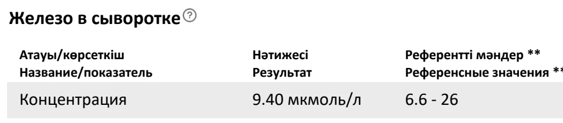
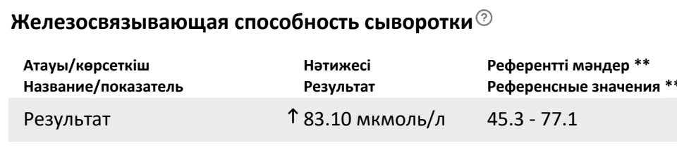

10 вопросов: хватает ли вам железа
!Есть тревожные признаки?5 стоп-сигналов - проверьте сначала
- Чёрный, дёгтеобразный стул или кровь в стуле
- Рвота с кровью или «кофейной гущей»
- Одышка или сердцебиение в покое, обмороки
- Месячные такие, что прокладки хватает на час
- Вес уходит сам, без диеты
Есть хотя бы один пункт? Не откладывайте обследование - заполните анкету: помогу составить план и разберу результаты.
Гемоглобин в норме, а склад пуст

Железа приходит меньше, чем уходит
месячные, роды, мало мяса, слабый желудок
Пустеет склад - ферритин
гемоглобин держится, а запаса уже нет
Усталость, волосы, одышка
а в бланке написано «норма»
женщин 15-49 лет в мире живут с анемией
ВОЗ, 2023; главная причина - нехватка железанижняя граница ферритина у популярных тестов - слишком низко
Truong 2024, обзор 61 исследованияГде теряется железо - и какой анализ это покажет
Нажмите на номер на схеме.

Открыть все 8 анализовнормы, как сдавать и + в ваш список
Как сдавать: утром, натощак. Таблетку железа не пейте сутки до анализа. Ферритин не сдавайте во время простуды - воспаление его завышает.
Как прочитать бланк - и чего не делать

Склад пуст. Ферритин ниже 8 - и так уже второй анализ подряд.

А железо «в норме». Поэтому по одному сывороточному железу дефицит легко пропустить.

Насыщение: 9,4 ÷ 83,1 = 11%. Ниже 20% - железа на доставку не хватает. Высокая ОЖСС - тело ищет железо.
Делать
- Смотреть три цифры вместе: ферритин, насыщение трансферрина и С-реактивный белок. По одной цифре запас железа не оценить.
Введите цифры из своего бланка - подскажу, как их прочитать. Железо и ОЖСС нужны, чтобы посчитать насыщение трансферрина.
- Чай и кофе - через час после еды. Чай вместе с едой снижал всасывание железа на 37%, через час - на 18%.
Не делать
- Пить таблетку железа в день анализа. Нужен перерыв минимум сутки, иначе железо и насыщение выйдут завышенными.
- Сдавать ферритин во время простуды. При воспалении он растёт и может скрыть пустой склад.
- Запивать железо молоком. Кальций из молока снижал всасывание железа на 50-60%.
Разберём ваше железо и вашу усталость
Один и тот же ферритин 25 значит разное: при обильных месячных, при хеликобактере и у вегетарианки - это три разных плана.
Аружан, 33 года
- Былоразбитость с утра, усталость к середине дня, выпадение волос
- Нашлискрытый железодефицит - низкий ферритин при нормальном гемоглобине
- Сталобольше энергии, дефицит железа восполнен
От анкеты до определённости
- 1АнкетаВсего 3 вопроса и пара минут. Менеджер напишет в WhatsApp и подберёт формат.

- 2Ваша историяСимптомы, месячные, питание, лекарства, какое железо уже пили.
- 3АнализыСоставлю персональный список. Есть свежие - посмотрю, чего не хватает.
- 4Консультация со мной Один на один в Zoom: разбираем цифры и находим, куда уходит железо и почему не восполняется.
- 5Ваш планПерсональный протокол восстановления, питание и приём железа под ваши анализы и 3-5 дней обратной связи.


Так выглядит протокол: план ведения и письмо с выводами по вашим анализам. Данные клиента скрыты. - ИтогУ вас появляется определённость
Больше никаких догадок. Вы знаете, что происходит с вашим телом, почему уходят силы и что делать каждый день.
Неделя 14812- Понятная причина вместо «всё в норме»
- Чёткий план на 8-12 недель - день за днём
- Вы идёте к своей цели по курсу, а не наугад
Это и есть главное, ради чего приходят на разбор.
12 мест на разбор
Беру до 3 человек в неделю. Ферритин восполняется месяцами - начните до праздников.
До 3 консультаций в неделю, Zoom 60-90 минут. Удобный день и время подберёт менеджер после анкеты.
Если вы дочитали до сюда - скорее всего, усталость с вами уже давно.
Вы сдавали анализы, слышали «всё в норме», пробовали витамины и диеты. А сил так и не прибавилось.
Хорошая новость: причина часто уже видна в ваших цифрах. Нужно лишь правильно их прочитать - этим я и занимаюсь.
- 1Лично разберу ваши анализыСам, а не ассистент или шаблон.
- 2Объясню простым языкомЧто значит каждая цифра и почему «норма» - не всегда норма.
- 3Только нужные анализыБез лишних трат и «сдайте всё на всякий случай».
- 4План, который можно начать в тот же деньПитание и приём железа под ваши анализы, без жёстких диет.
- 5Не оставлю одних после консультации3-5 дней на связи, чтобы ответить на вопросы.
Первый шаг - короткая анкета на 2 минуты. Она ни к чему не обязывает: менеджер напишет в WhatsApp, ответит на вопросы и подберёт формат.
До Нового года - осталось 12 мест. Давайте начнём, пока они есть.
Короткая анкета, пара минут. Менеджер ответит в WhatsApp - ни к чему не обязывает. Консультация платная, стоимость зависит от формата.
Источники (14)
- ВОЗ. WHO guideline on use of ferritin concentrations to assess iron status in individuals and populations, 2020 - дефицит у взрослых: ферритин < 15 мкг/л; при воспалении (СРБ > 5 мг/л) - < 70 мкг/л
- ВОЗ. Anaemia, fact sheet 2023 - анемия у 30% женщин 15-49 лет
- Truong J. и соавт. Population-based reference intervals for ferritin: a systematic review. Lancet Haematol 2024 - 61 исследование; медиана нижней границы у женщин у самых распространённых тестов около 11 мкг/л
- Mei Z. и соавт. Physiologically based serum ferritin thresholds for iron deficiency in children and non-pregnant women (NHANES). Lancet Haematol 2021 - нехватка железа для кроветворения начинается при ферритине около 25 мкг/л
- Verdon F. и соавт. Iron supplementation for unexplained fatigue in non-anaemic women: double blind randomised placebo controlled trial. BMJ 2003;326:1124 - усталость уменьшалась при ферритине ≤ 50 мкг/л
- Vaucher P. и соавт. Effect of iron supplementation on fatigue in nonanemic menstruating women with low ferritin. CMAJ 2012;184:1247-1254 - 198 женщин, ферритин за 12 недель с 22 до ~34
- Snook J. и соавт. British Society of Gastroenterology guidelines for the management of iron deficiency anaemia in adults. Gut 2021;70:2030-2051 - насыщение трансферрина < 20%; проверять целиакию и хеликобактер
- Pfeiffer C.M., Looker A.C. Laboratory methodologies for indicators of iron status. Am J Clin Nutr 2017;106(Suppl 6):1606S-1614S - насыщение = железо / ОЖСС; сывороточное железо у одного человека колеблется примерно на 30%
- Balendran S., Forsyth C. Non-anaemic iron deficiency. Aust Prescr 2021;44:193-196 - таблетку железа не принимать минимум 24 часа до анализа
- Ahmad Fuzi S.F. и соавт. A 1-h time interval between a meal containing iron and consumption of tea attenuates the inhibitory effects on iron absorption. Am J Clin Nutr 2017;106:1413-1421 - чай с едой: -37%, через час: -18%
- Hallberg L. и соавт. Calcium: effect of different amounts on nonheme- and heme-iron absorption in humans. Am J Clin Nutr 1991;53:112-119 - кальций снижал всасывание на 50-60%
- Hutchinson C. и соавт. Proton pump inhibitors suppress absorption of dietary non-haem iron in hereditary haemochromatosis. Gut 2007;56:1291-1295 - на омепразоле железо из еды всасывалось примерно вдвое хуже
- ВОЗ. Haemoglobin concentrations for the diagnosis of anaemia, 2011 - анемия: гемоглобин < 120 г/л у женщин, < 130 г/л у мужчин
- Lam J.R. и соавт. Proton pump inhibitor and histamine 2 receptor antagonist use and vitamin B12 deficiency. JAMA 2013;310:2435-2442. Видео и фото к самопроверке: Pexels (лицензия Pexels). Иконки и схема нарисованы для гида